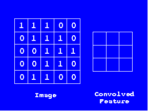
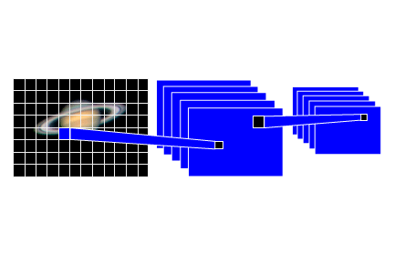

This telescope will allow you to peer into the oldest galaxies in the universe.
Observations of deep space objects will beam directly back to Earth over your Internet connection. Molecular clouds, galactic winds and star formations may be visible to you through transmissions sent from the telescope.
Transmissions from the telescope use a kind of Artificial Intelligence (AI) called machine learning. Machine learning focuses on creating computer programs that can change when exposed to new data.
Convolutional Neural Networks:
A Convolutional Neural Network (CNN) is a computer algorithm generally used for image recognition and classification.
Chances are you've already used CNN
without even knowing it!
If you have used Google Images, Apple’s Siri, Skype’s translation function, Netflix’s recommendations, Amazon’s suggestions, or Microsoft’s Cortana you are already using a neural network in your everyday life.
Computers do not know how to reason like humans do. They are, as the name suggests, computing machines and solve problems only with numbers and rules, not ideas and concepts. As result, they need to study our patterns of using a service in order to learn ideas and concepts that we as humans understand.
This model, a neural network, translates our usage into data it understands and then run tests which allows us to use the data meaningfully in the use cases mentioned above. Over time the neural network grows as our usage creates a large dataset for the computer to learn from and produce better results for what it is programmed to do. This is why the more you watch Netflix, the better and more accurate the recommendations are.
In Real Life
Google Images Search images based on your description and Google Images recognizes content in the images. This is how SafeSearch can distinguish inappropriate content in images.
Apple’s Siri A personal assistant embedded in the Apple phone since the iOS 5, which learns your preferences over time.
Skype’s translation function Translates speech between two interlocutors, in over 40 languages, in real-time over Skype. (for refererence, since not everyone knows about this
)
Netflix’s recommendations Predicts films and television shows you may prefer based on your viewing history.
Amazon’s suggestions Provides merchandise suggestions based on your shopping patterns and saved lists.
Microsoft’s Cortana A personal assistant embedded in Microsoft 10 OS, which learns your preferences over time.
How do they work?
A Convolutional Neural Network is a specific type of Neural Network.
Neural Networks often start with little to no prior knowledge or assumptions about the data they classify, instead they are trained on a dataset where the answer is known, this is known as training. Once the have obtained a reasonable level of accuracy they are given new data where the end result is unknown.
Nodes and links
Neural Networks are based on nodes and links. The simplest neural network (a perceptron) can be shown as 3 nodes, the input the hidden layer and the output.
Neural Networks are based on nodes and links. The simplest neural network (a perceptron) can be shown as 3 nodes, the input the hidden layer and the output. The hidden layers job is to transform the input in some way. This can be as simple as multiplication but is often far more complex
Convolution
Unlike humans, machines are unable to distinguish hierarchy or conceptual structure. Therefore, the first step in a CNN is a convolutional layer. The convolutional layer is a proportionate sample of the input, used to inspect quantifiable objects such as pixels or colours.
Let’s say our training data is based on differentiating between stars and planets in the sky. Convolution can be compared to a telescope that scans the night sky, selecting parts that overlap. Occasionally, there will be dark space with no objects. A human can distinguish some elements from others, while a machine can only process an average of the data. Convolution enables the neural network to develop a hierarchy and distinguish objects from one another.

Convolution
The input is a 32 x 32 x 3 array of pixel values. Now, picture the convolutional layer as a telescope that is looking into the top left of the sky. Let’s say that the telescope’s lens covers a 5 x 5 area. Now, let’s imagine this telescope sliding across all the areas of the input image. The telescope, now known as the filter, is also an array of numbers that are called weights or parameters. For the math to work, the depth of this filter has to be the same as the depth of the input, so the dimensions of this filter are 5 x 5 x 3. Now, let’s consider the first position the filter is in for example. It would be the top left corner. As the filter is sliding, or convolving, around the input image, it is multiplying the values in the filter with the original pixel values of the image. These multiplications are all summed up (75 multiplications in total). Now you have a single number. Remember, this number is just representative of when the filter is at the top left of the image. Now, repeat this process for every location on the input volume. Next step would be moving the filter to the right by 1 unit, then again by 1 unit, until the entire image is convolved. Every unique location on the input volume produces a number. After moving the filter over all the locations, you will find out that what you’re left with is a 28 x 28 x 1 array of numbers, which we call pooling. The reason you get a 28 x 28 array is that there are 784 different locations that a 5 x 5 filter can fit on a 32 x 32 input image. These 784 numbers are mapped to a 28 x 28 array.
Filters
The telescope itself is what would be called a filter, and the region it is peering into is called the receptive field. The filter is also a set of numbers, called weights. As the filter convolves -- that is, slides over the input -- it is performing multiplications that can be averaged into a single number. After processing the entire image, the CNN is left with a downsampled pooling layer.
Pool - ReLu / Activation Layer
The purpose of these downsampled layers is to allow the neural network to process images in a nonlinear way, allowing for faster processing speeds. When the program is trying to predict an image of a planet, the pooling layers will have high values that represent high level features like colour, surface, or rings. However, if it is predicting a star, it might have high level features like brightness or size.

Fully Connected / Output / Classification + The Artist Hand
The fully connected layer is the last layer before the CNN is able to make a prediction. This layer takes an input volume of the last pooling layer and outputs a vector based on the number of classes the program has to choose from. This layer ensures that an adequate prediction can be made, compared to previous pooled layers, because it correlates the high level features from pooled layers with the weights, based off the trained data.

Are you ready to receive a transmission from deep space?